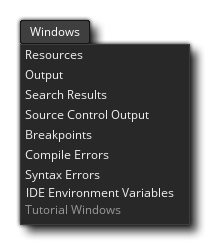

This menu is for opening the general docked IDE windows. Since docks can be re-arranged and the contents can be removed as stand-alone windows or even closed entirely, this window permits you to re-open them if you find that you need them for anything. The windows that can be opened from here are the Resources window and all the different Output windows (Output, Search, SCM, Breakpoints and Compile/Syntax Errors).
Next you can open the Recent
Windows list, and there is also the option to open the
Environment Variables window where you can see the different
paths that the various environment variables used in the
Preferences point to. These variables cannot be edited (neither
their name nor their path/setting) but you can select and
copy/paste any of them for use elsewhere. 
Finally you have the option to open Tutorial Windows. This will re-open any windows that are related to a tutorial project you have opened, but only if the project is one that was created as part of a tutorial (if not, this option will be unavailable). For information on creating your own tutorial projects, please see the section on the Marketplace (as all tutorials are created, hosted and downloaded from there.